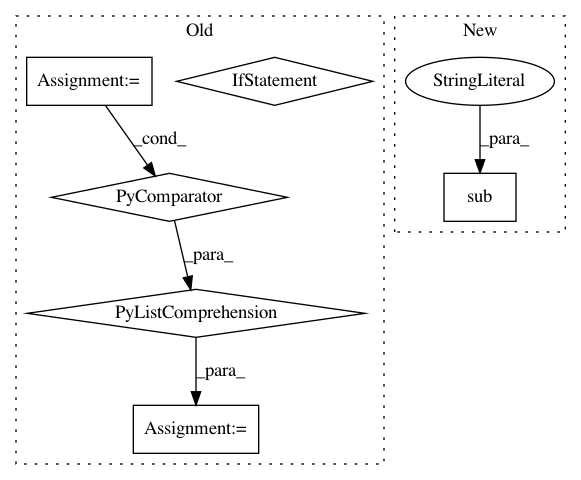

f91c6aaadfed8c6dc7ee58f459c4aa369fcba882,scripts/abduction_tools.py,,GetPremisesThatMatchConclusionArgs,#Any#Any#,83
Before Change
conclusion_args = set(conclusion_terms[1:])
candidate_premises = []
for premise in premises:
premise_terms = [p.strip(")(") for p in premise.split()[2:]]
premise_args = set(premise_terms[1:])
logging.debug("Conclusion args: " + str(conclusion_args) + \
"\nPremise args: " + str(premise_args))
if premise_args.intersection(conclusion_args):
After Change
return candidate_premises
for premise_line in premises:
// Convert anonymous variables of the form ?345 into ?x345.
premise_line = re.sub(r"\?([0-9]+)", r"?x\1", premise_line)
premise_args = get_tree_pred_args(premise_line)
logging.debug("Conclusion args: " + str(conclusion_args) + \
"\nPremise args: " + str(premise_args))
if TreeContains(premise_args, conclusion_args):
In pattern: SUPERPATTERN
Frequency: 3
Non-data size: 6
Instances
Project Name: mynlp/ccg2lambda
Commit Name: f91c6aaadfed8c6dc7ee58f459c4aa369fcba882
Time: 2017-01-12
Author: pascual@nii.ac.jp
File Name: scripts/abduction_tools.py
Class Name:
Method Name: GetPremisesThatMatchConclusionArgs
Project Name: mynlp/ccg2lambda
Commit Name: f91c6aaadfed8c6dc7ee58f459c4aa369fcba882
Time: 2017-01-12
Author: pascual@nii.ac.jp
File Name: scripts/abduction_tools.py
Class Name:
Method Name: GetPremisesThatMatchConclusionArgs
Project Name: dmlc/gluon-nlp
Commit Name: 8880acf0899efee237251cbd01c7ff81fc535789
Time: 2018-06-22
Author: szhengac@users.noreply.github.com
File Name: scripts/nmt/bleu.py
Class Name:
Method Name: _split_compound_word
Project Name: NifTK/NiftyNet
Commit Name: 4e1a3df937b398cdc38a635bdbe4a15dc79bb8c2
Time: 2018-09-11
Author: wenqi.li@ucl.ac.uk
File Name: niftynet/utilities/filename_matching.py
Class Name: KeywordsMatching
Method Name: __extract_subject_id_from